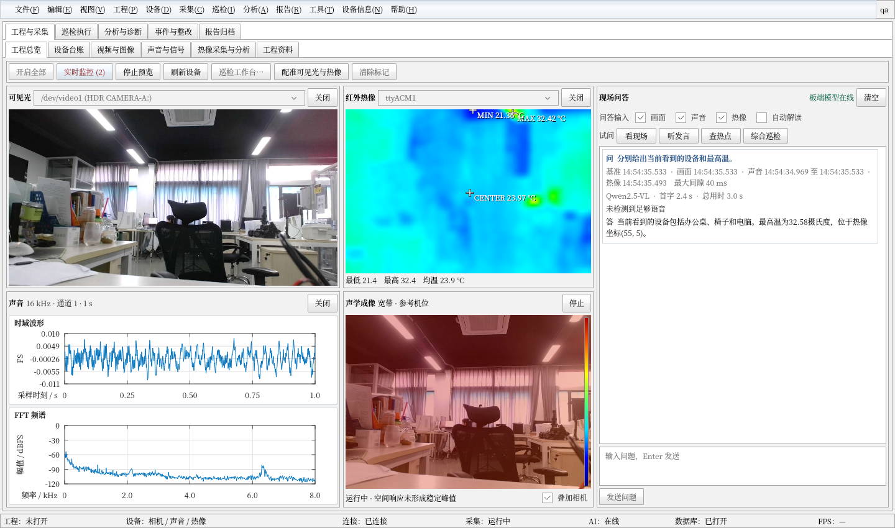
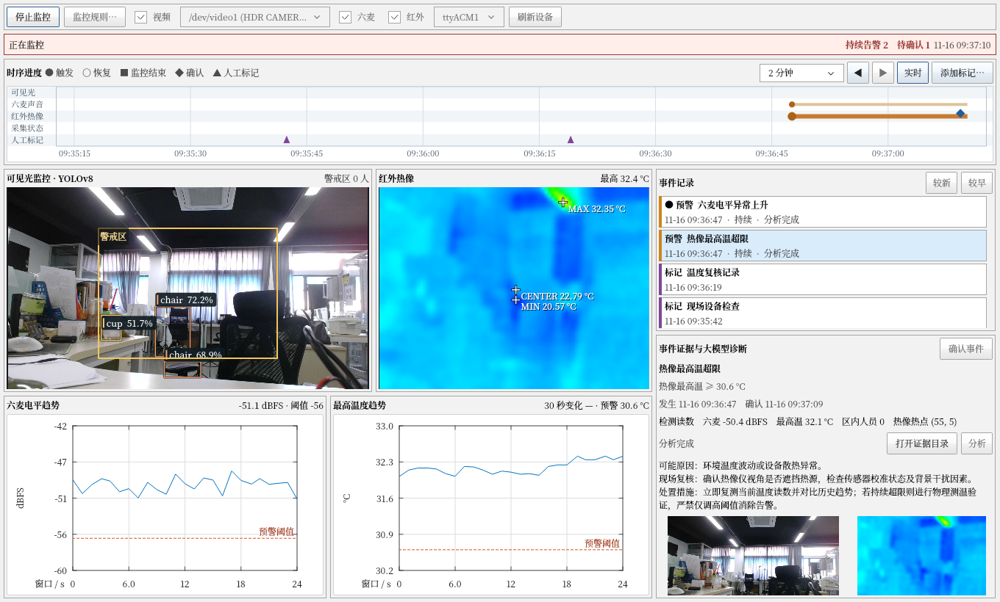
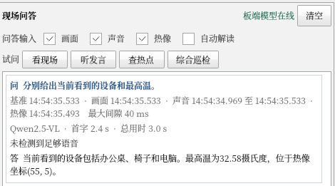
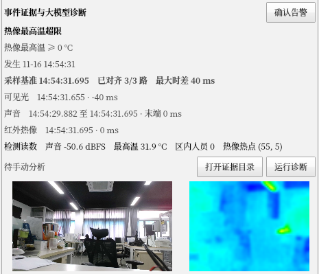
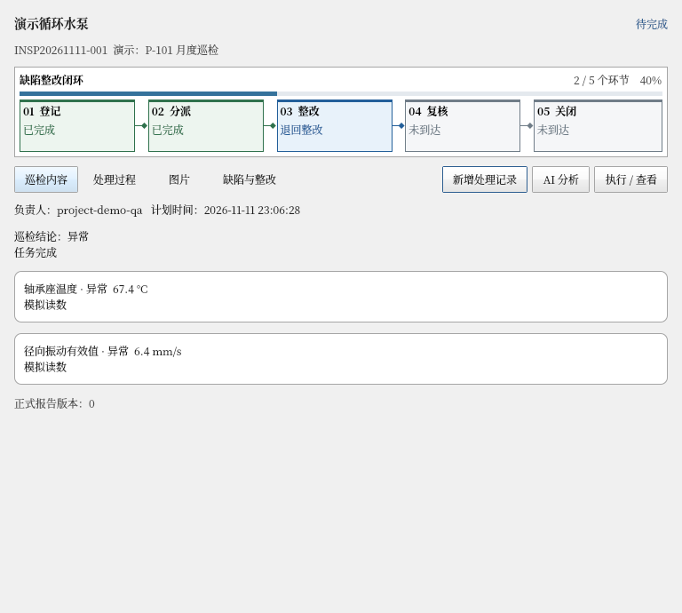
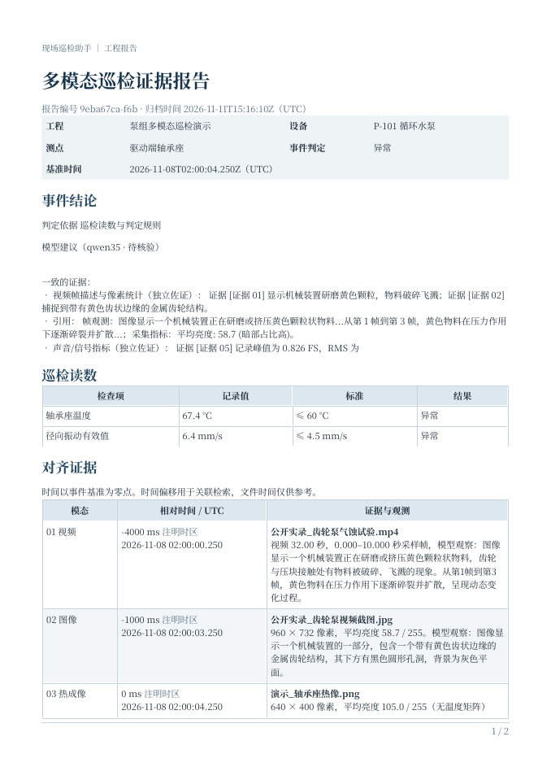

数据分散在各处。
问题却发生在同一现场。



异常难关联
同一问题，散落在不同信号里。
分析费时间
需要反复切换界面与资料。
结果难追溯
判断与原始证据难以统一。
大模型，
成为现场的分析能力。
问现场问题，
得到有依据的回答。
文字、图像与工程数据可以共同参与分析。

推理性能。
用数据说话。
64.94tokens/s
回答生成速度
452.22tokens/s
输入处理速度
1107.8 ms首字用时
1757.3 ms本次总用时
321输入 tokens
39输出 tokens
图像问答 · 单次板端实测
让多种感知，
共同还原现场。
01
视觉与视频
识别对象，理解过程。
02
红外热像
看见温差，观察变化。
03
声学成像
从声音线索，定位异常方向。
04
语音记录
识别发言，回查现场交接。

声音的变化，
在频谱里清晰呈现。
16 kHz 采样 · 合成演示信号
从多源信号，
走向同一次理解。
把同一事件的证据关联起来。
画面、声音与热像，同步进入分析。

从发现异常，
到完成一次交接。
留下现场的完整信息。
采集画面、声音与温度变化。
把智能带到现场。
把证据留在流程里。
板端智能
模型与传感协同工作。
事件可追溯
从分析结果回到原始记录。

巡检闭环
让处置、复核和报告形成连续流程。

技术规格
RK3588ARM64 主控
RK1828板端推理加速
6 通道16 kHz PCM 声学采集
4 种声学成像模式
完整硬件与系统参数
计算与部署
- 主控平台
- RK3588 · ARM64
- 推理平台
- RK1828
- 操作系统
- Ubuntu 24.04 LTS
- 本地运行
- 采集 · 问答 · 归档
多模态接入
- 可见光
- 预览 · 检测 · 分割
- 声音
- 16 kHz · 六通道 PCM
- 红外热像
- 温度分布 · 极值 · 趋势
- 补充资料
- 视频 · 图片 · 音频 · CSV
信号与空间分析
- 时域分析
- 波形 · RMS · 数字电平
- 频域分析
- FFT · Welch · STFT
- 声学成像
- 延时求和 · SRP-PHAT · MVDR
- 时间对齐
- 默认容差 250 ms
智能分析与工程管理
- 板端模型
- Qwen3.5 · Qwen2.5-VL · Qwen3-VL · Qwen3-ASR
- 多模态理解
- 图文问答 · 视频理解
- 语音记录
- 分轨 · 转写 · 回听
- 巡检管理
- 设备 · 测点 · 任务 · 整改
- 输出与归档
- PDF · CSV · .miproj